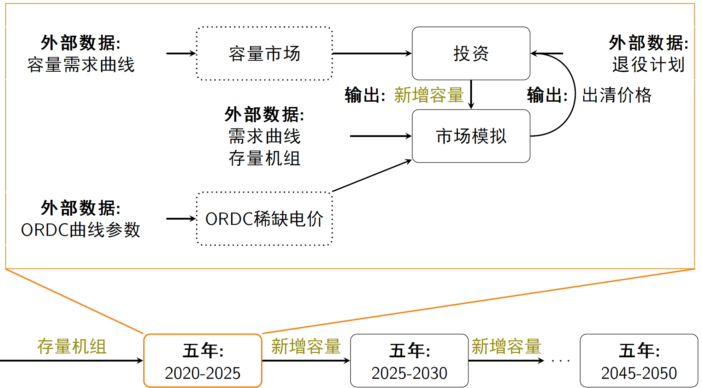

Dr. Yuting MOU(牟玉亭)
 |
Assistant Professor |
近期研究内容
电动汽车充放电控制
需求响应
有序用电
稀缺电价与容量市场
招生信息/Future students
国内硕士研究生
每年1-2个硕士研究生招生名额，通过与华为数字能源、国网电科院、国网经研院以及欧洲智库的合作提炼研究课题，在新型电力系统和能源市场的应用背景下，培养学生数学建模、编程以及表达能力，学生可以从以下两种培养方案中自由选择： 1)专注发表学术论文 或者 2)偏向参与横向项目。对有兴趣赴海外攻读博士学位的同学，可协助申请欧洲学校博士。欢迎加入课题组！International PhD student
One opening is possible for the September intake 2024. It could be helpful if you send your CV and research proposal, and then we can have a meeting to discuss details.Biography
Yuting Mou obtained his PhD degree from the Center for Operations Research and Econometrics (CORE), Université Catholique de Louvain (UCLouvain) under the supervision of Professor Anthony Papavasiliou and Professor Philippe Chevalier . Before that, he received the master degree in Control Science and Engineering from Zhejiang University, under the supervision of Professor Minyue Fu and Professor Zhiyun Lin.
He was a researcher of the energy market team at VITO/EnergyVille until August 2021 and joined Southeast University as an assistant professor in October 2021. His research interests include demand response, market design, optimization of large-scale systems, stochastic programming (获华为”火花奖“), bi-level optimization and application of game theory in the energy sector.
Education
PhD, Power System Operation and Economics, Université catholique de Louvain (November 2015 –June 2020).
MSc, Control Science and Engineering, Zhejiang University (September 2012–March 2015).
BSc, Automation, Jilin University (September 2008–June 2012).
Working experience
Assistant Professor at Southeast University (Since October 2021).
Researcher at Flemish Institute for Technological Research (VITO) / EnergyVille (November 2019–August 2021).
Publications
Peer-reviewed journal publications
Yuting Mou, Anthony Papavasiliou, Katharina Hartz, Alexander Dusolt and Christian Redl. An analysis of shortage pricing and capacity remuneration mechanisms on the pan-European common energy market. Energy Policy, forthcoming.
Yuting Mou, Beibei Wang, and Zhan Shen. An optimization scheme for designing power rationing schedules in a long-term power shortage. Electric Power Systems Research 225 (2023): 109816.
Luciana Marques, Anibal Sanjab, Yuting Mou, Hélène Le Cadre, and Kris Kessels. Grid impact aware TSO-DSO market models for flexibility procurement: Coordination, pricing efficiency, and information sharing. IEEE Transactions on Power Systems, 38(2):1920–1933,2023.
Anibal Sanjab, Hélène Le Cadre, and Yuting Mou. TSO-DSOs stable cost allocation for the joint procurement of flexibility: A cooperative game approach. IEEE Transactions on Smart Grid, 13(6):4449–4464, 2022.
Céline Gérard, Daniel Avila, Yuting Mou, Anthony Papavasiliou, and Philippe Chevalier. Comparison of priority service with multilevel demand subscription. IEEE Transactions on Smart Grid, 13(3):2026–2037, 2022.
Hélène Le Cadre, Yuting Mou, and Hanspeter Höschle. Parametrized inexact-ADMM based coordination games: A normalized Nash equilibrium approach. European Journal of Operational Research,296(2):696–716, 2022.
Shahab Shariat Torbaghan, Mehdi Madani, Peter Sels, Ana Virag, Hélène Le Cadre, Kris Kessels, and Yuting Mou. Designing day-ahead multi-carrier markets for flexibility: Models and clearing algorithms. Applied Energy, 285:116390, 2021.
Yuting Mou, Anthony Papavasiliou, and Philippe Chevalier. A bi-level optimization formulation of priority service pricing. IEEE Transactions on Power Systems, 35(4):2493–2505, 2020.
Anthony Papavasiliou, Yuting Mou, Léopold Cambier, and Damien Scieur. Application of stochastic dual dynamic programming to the real-time dispatch of storage under renewable supply uncertainty. IEEE Transactions on Sustainable Energy, 9(2):547–558, 2018.
Hao Xing, Minyue Fu, Zhiyun Lin, and Yuting Mou. Decentralized optimal scheduling for charging and discharging of plug-in electric vehicles in smart grids. IEEE Transactions on Power Systems, 31(5):4118–4127, 2016.
Yuting Mou, Hao Xing, Zhiyun Lin, and Minyue Fu. Decentralized optimal demand-side management for PHEV charging in a smart grid. IEEE Transactions on Smart Grid, 6(2):726–736, 2015.
Hao Xing, Yuting Mou, Minyue Fu, and Zhiyun Lin. Distributed bisection method for economic power dispatch in smart grid. IEEE Transactions on power systems, 30(6):3024–3035, 2015.
Peer-reviewed conference publications
Yuting Mou, Céline Gérard, Anthony Papavasiliou, and Philippe Chevalier. Designing menus for multilevel demand subscription. In 2021 Hawaii International Conference on System Sciences (HICSS), 2021.
Yuting Mou and Anthony Papavasiliou. Long-run cost-benefit analysis of demand response for the European system. In 2018 IEEE Power & Energy Society General Meeting (PESGM). IEEE, 2018.
Yuting Mou, Anthony Papavasiliou, and Philippe Chevalier. Application of multilevel demand subscription pricing for mobilizing residential demand response in Belgium. In 2018 IEEE International Energy Conference (ENERGYCON). IEEE, June 2018.
Yuting Mou, Hao Xing, Minyue Fu, and Zhiyun Lin. Distributed charging control for electric vehicles considering fair power allocation. In 2018 IEEE 14th International Conference on Control and Automation (ICCA), pages 373–378. IEEE, 2018.
Yuting Mou, Anthony Papavasiliou, and Philippe Chevalier. Application of priority service pricing for mobilizing residential demand response in Belgium. In 2017 International Conference on the European Energy Market (EEM),. IEEE, 2017.
Yuting Mou, Hao Xing, Minyue Fu, and Zhiyun Lin. Decentralized PWM-based charging control for plug-in electric vehicles. In 2015 European Control Conference (ECC), pages 1070–1075. IEEE, 2015.
Yuting Mou, Hao Xing, Zhiyun Lin, and Minyue Fu. A new approach to distributed charging control for plug-in hybrid electric vehicles. In 2014 Chinese Control Conference (CCC), pages 8118–8123. IEEE, 2014.
Ph.D. thesis.
Title: Nonlinear Pricing Schemes for Mobilizing Residential Flexibility in Power Systems
Supervisors: Prof. Anthony Papavasiliou and Prof. Philippe Chevalier
Jury members: Per Agrell, Bertrand Cornélusse, Hervé Jeanmart, Dimitrios Papadaskalopoulos, Andreas Ehrenmann, Hanspeter Höschle
Presentations
新能源、储能与多阶段随机规划，2023中国南京双碳产业大会，中国南京，2023年9月17日.
An analysis of shortage pricing and capacity remuneration mechanisms based on the European common energy market, IEEE 6th International Electrical and Energy Conference (CIEEC 2023), Hefei China, May 14, 2023.
输配电网运营商灵活性资源联合采购机制设计，2022国际电气与能源大会之“面向碳中和的电力能源前沿”南京论坛，中国南京，2022年5月28日.
通过非线性定价理论提高居民用电灵活性. 第四届“东南电力经济论坛”，中国南京，2021年7月24日.
Comparison of priority service pricing and multilevel demand subscription pricing. INFORMS 2019, Seattle USA, October 21, 2019.
How do you pay for electricity in the future – a capacity-based price menu for residential consumers. IEEE PES General Meeting 2019, Atlanta USA, August 7, 2019.
A bi-level optimization formulation of multilevel demand subscription pricing. 30th European Conference on Operational Research, Dublin Ireland, June 26, 2019.
Application of SDDP to the real-time dispatch of storage under renewable supply uncertainty. IEEE PES General Meeting 2018, Portland USA, August 7, 2018.
A bi-level optimization formulation of priority service pricing. 29th European Conference on Operational Research, Valencia Spain, July 10, 2018.
A bi-level optimization formulation of priority service pricing – a first step to capacity expansion. 41st IAEE International Conference, Groningen the Netherlands, June 7, 2018.
Long-run cost-benefit analysis of demand response for the European system. 6th BAEE Research Workshop on Energy Economics, Leuven Belgium, November 10, 2017.
Application of priority service pricing for mobilizing residential demand response in Belgium. 14th International Conference on the European Energy Market, Dresden Germany, June 6, 2017.
专利
肖怡康，牟玉亭.一种基于两阶段随机规划算法的有序用电方案制定方法.202211384220.X
Research projects
江苏省双创博士（高校创新类）资助项目, 主持, 2023年1月–2024年12月.
基于非线性定价理论的柔性负荷控制和市场机制研究, 东南大学引进人才科研启动项目, 主持, 2022年5月–2023年1月.
Market Design for an EU Net Zero Electricity System, Joint work with National Technical University of Athens and Agora Energiewende, January 2022–September 2022.
《江苏省电力现货交易规则》编写, 国家能源局江苏监管办公室, 参与, 2021年9月–2021年12月.
Energy Policy Decision Support Toolbox, Funded by Research Foundation - Flanders (FWO), Work Package Leader, November 2019–August 2021.
CoordiNet, Funded by the European Commission – Horizon 2020, April 2020–August 2021.
Future Grid Tariffs, Funded by Elia, June 2020–September 2020.
Color Power, Funded by ENGIE Electrabel, November 2015–November 2019.
Awards
校级本科优秀毕业论文指导老师，考虑容量需求费的居民用户零售套餐设计（肖怡康），2023年6月
华为火花奖，考虑源荷不确定性的新能源微网系统配置与运行优化技术，2023年4月
Academic services
Conference organization
Organizing committee member and session chair of IEEE 5th International Electrical and Energy Conference, May 27-29, 2022
Organizer and session chair of CORE Energy Day, Université catholique de Louvain, December 7-8, 2020
Session chair of INFORMS Annual meeting, October 20-23, 2019
Session chair of the 29th European Conference on Operational Research, July 8-11, 2018
Journal reviewer
IEEE Transactions on Power Systems/Sustainable Energy/Smart Grid/Energy Markets, Policy and Regulation
Outstanding Reviewer for IEEE Transactions on Sustainable Energy, 2022
Management Science
电机工程学报
电网技术
Teaching and supervising
Undergraduate courses:
[BG4L0010] 计算机程序设计（上）
[BG4L0020] 计算机程序设计（下）
[BG4L0030] C++程序设计课程设计
Graduate courses:
[S016168] 电力系统规划与可靠性
Master students
2022-，李骏(co-supervising)
2023-，肖怡康
PhD students
2023-，萨尼 SANAULLAH ZAFAR